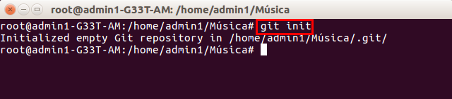
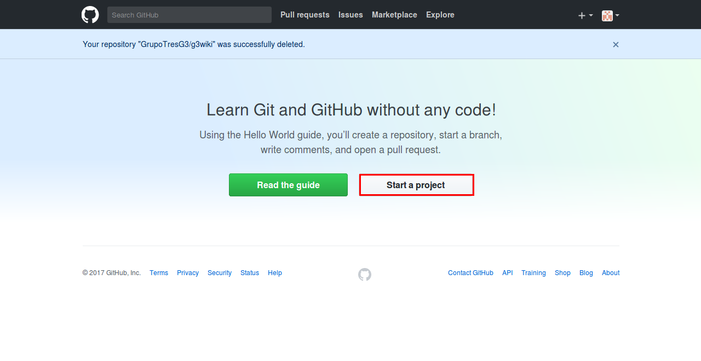

Instalar y configurar GIT
- Instalar git - "apt-get install git".
- Iniciar git (Se hace en la carpeta donde se realizará la copia) - "git init". 
- Configurar correo - "git config --global user.email "tuemail" ".
- Hacer la primera copia - "git add ." (El punto copia todo lo que hay).
- Comprobar si hay cambios para hacer commit, en este caso ya se han guardado - "git status".
- Consolidarlo o cerrarlo (Confirmarlo) - "git commit -m "nombre" ".
- Mostrar consolidaciones - "git log".
- Mostrar cambios para hacer commit despues de crear otro documento - "git status".
-
Añadir un cambio nuevo - "git add nombrearchivo" y comprobar que se puede hacer commit.

Utilizar GIT-HUB
- Entrar a la web de github y despues de registrarse iniciar sesion.
- Para crear el primer repositorio hay que darle a "Start a proyect", elegir el nombre y darle a "Create repository". 
- Una vez creado vamos a ubuntu para crear varios archivos y subirlos a github. Con el comando "git remote add origin URL" (la URL es la del repositorio que hemos creado) le indicamos cual es nuestro repositorio remoto y con "git push -u origin master" lo subimos al repositorio en la nube. Y comprobamos como se han subido los archivos.
- Para bajar los archivos del repositorio que tenemos en la nube utilizamos el comando "git clone URL", para comprobar su funcionamiento eliminamos lo que tenemos en local.
- Con el comando "git pull origin master" y si previamente hemos utilizado "git clone" nos descargara en nuestro repositorio local en la rama master(se puede poner otra rama) los cambios que se hayan realizado. Para comprobarlo creamos un fichero en la nube y despues ejecutamos el comando. Como hemos puesto "master" lo descarga en "www" porque es la rama que nosotros hemos utilizado como master.
- Para eliminar el repositorio en la nube vamos a "Settings", despues bajamos hasta abajo y "Delete this repository" y finalmente escribimos el nombre de nuestro repositorio para confirmarlo y se eliminará.
-
Borrar repositorio en local:
"git remote rm origin".
"git config master.remote origin".
"git config master.merge refs/heads/master".